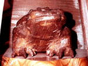

私も入っています。。全国かえる奉賛会 全国かえる奉賛会に入会するには、ご自分のホームページに、上のバナーを貼り付けるだけだ。どんどん入会しましょー。大王様に会うには、上の絵をクリック。ずずっと奥に写真館があるぞ。 |
|
【かえる古新聞】
|
|
【カエル速報】 1.カエルグッズ 2.カエルリンク 3.国家健全化計画 4.謎の髭男 5.とっくりくん 6.街頭で見た蛙 7.カエルショップ 8.奉納カエル絵馬 9.カエル・コスプレ 10.カエルな表紙 |
| 大王様へのメール |
奉賛会推薦菓子
かえる饅頭 この欄に紹介するカエル物品や書籍についての情報を待っています。みんなで、掘り起こそう、かえる土産。かえる産品を奨励しよう！使うほど安く良くなるカエル品 |
|
|
埼玉・長瀞のカエル神社参拝報告
|
 |
|
|
そこで！長瀞駅前の観光案内所にすぐさま入り、 『かえる神社ってありますか？』と、案内所のお姉さんに聞いたところ、笑いながら教えてくださいました。『あ〜(笑）、ふふっありますよ〜』
さらに長瀞駅にて駅員さんに『あの〜かえる神社が見たいんですけど・・』と問うと『あ〜〜〜、どうぞ』とついに神社に到着した。
中には何と！！！木彫りの、いかにも手作りな親子がえるが祭ってありました思わず激写！！！
埼玉・長瀞のカエル神社は確かに実在していた。みんなも参拝して御利益にあずかろう。神社全景の写真も撮影している。
いちどといわずに、またきてくんな
【げこげこ大王７世】送付していただいた写真を鑑定すると、どーして、長瀞駅にカエル神社があるかというと、『天下の勝地長瀞へ、また来て欲しい』という願いと、『来ていただいたお客様が、無事に帰る（蛙）』ように祈る意味が込められているそうだ。『お社は秩父市天満天神宮社、お蛙は秩父市近戸町原家より寄贈された』という。お蛙を寄贈した原家に祝福あれー関越自動車道でもカエル標識
【埼玉発=謎の大学院生けろけろ同志記者】カエル神社に参拝した帰路に、関越自動車道のパーキングエリアで、カエル標識もゲット。大量のごみを抱えながら『ゴミ箱がない！』とうろたえているカエルが描いていた。謎の大学院生にカエルシール贈呈
【全国かえる奉賛会】全国かえる奉賛会は、謎の大学院生の突撃かえる精神を称えるとともに、印南町製カエルシールを贈呈する。感状も発行したいのだが、あれを作ると睡眠時間が大幅に減るので、そのうち発行するまで、待って欲しい。感状発行をボランティアしてくれる人はおらんかいのう。そしたら乱発できるのだが。。感状を自分のページに貼って良いぞ
いなかの家とかに行くと、座敷に表彰状とかをずらずら貼っているであろう。全国かえる奉賛会発行の感状は、自分のページ持っている人は、ページの座敷などに遠慮無く貼って、自慢していいぞ(笑)見本は下だ。すざましー映像を入手！
全国かえる奉賛会あてに、すざましー映像が到着したぞ！もっか緊急取材中だ。準備したトップニュースを急速入れ替え中だ！！詳しくは次号を待て！| 編集げこげこ後記◆かえる新聞で呼びかけたら、すぐさま現場に取材に向かうパワーは、やっぱり、思い立ったらぴょおおおおおおんと飛びつくカエルな同志ならではだ◆カエルグッズの種類も、このところ急激に増加していることだし、カエルブーム爆発の日は刻々と迫っているぞ◆さあ、まだカエル奉賛会に入っていない人は、いますぐ入会しよう |